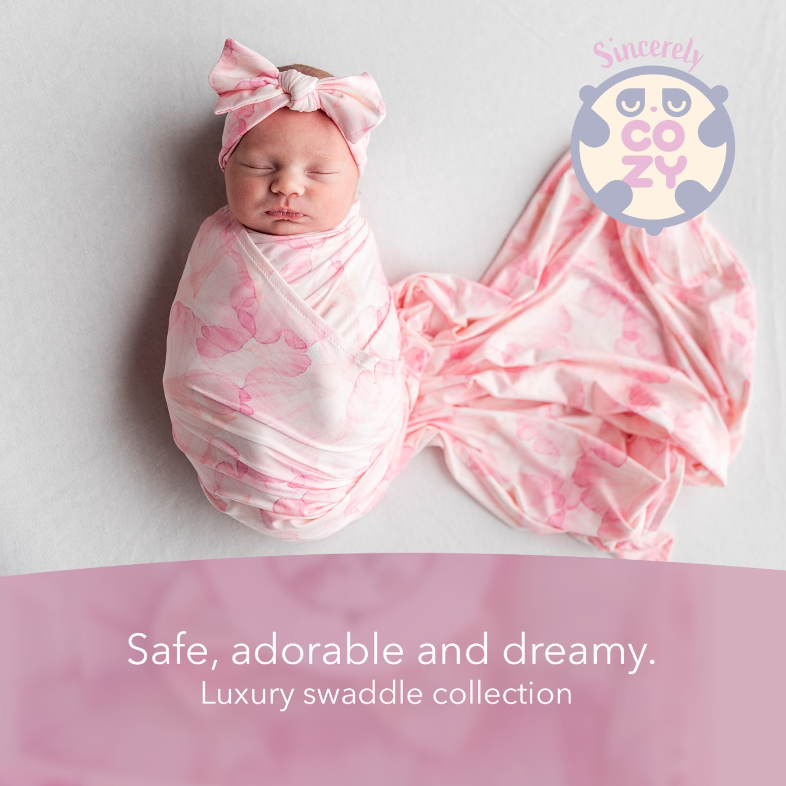

More prints
Baby Blue · Cozy Teddy Bear · Dreamy Clouds · Little Butterfly · Pickaboo Bear

Bamboo Swaddle Blanket
Rose Petal looks like a wash of watercolor. Translucent petals in several shades of pink overlap on a pale blush background, so the color deepens and fades across the blanket without any hard edges. It is the most floral of the six prints and also the most tonal, with everything kept within the same pink family.
The blanket measures 34" × 40" and is made from 95% bamboo rayon. The material is lightweight and breathable, hypoallergenic, and stretchy for an easy wrap. Because the print is all soft gradients, how the fabric feels matters as much as how it looks, and softness that lasts through washes is a big part of the appeal.
Use it as a swaddle, nursing cover, stroller canopy, burp cloth or tummy time blanket. It is also the print shown in the hero photograph on our homepage, if you want to see it on a baby before you choose.
The set is photographed with a matching knotted bow headband. Machine washable; see our care instructions and why we use bamboo.
Baby Blue · Cozy Teddy Bear · Dreamy Clouds · Little Butterfly · Pickaboo Bear